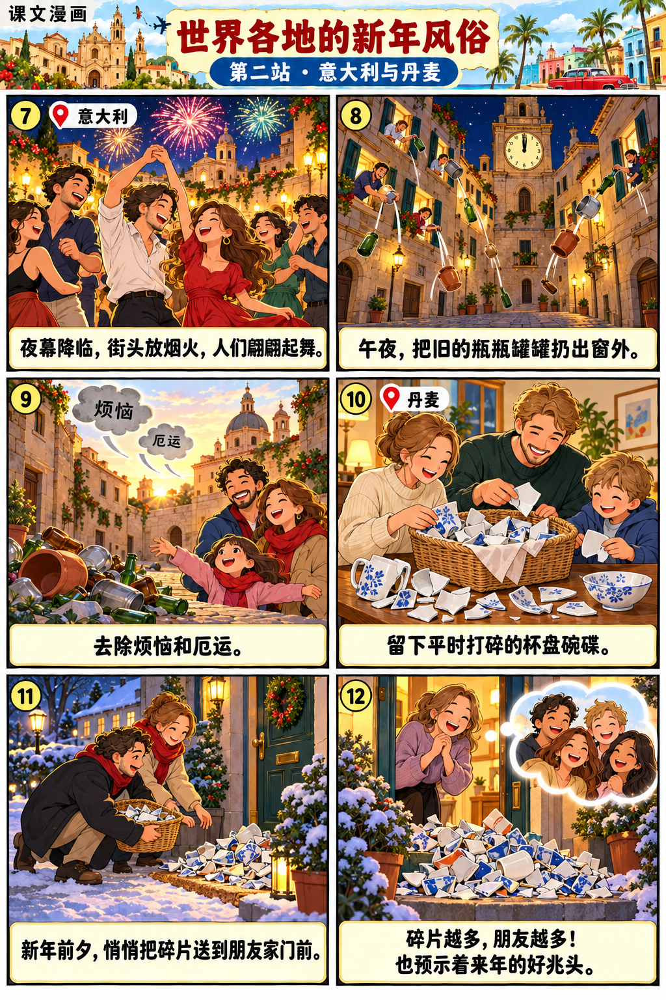
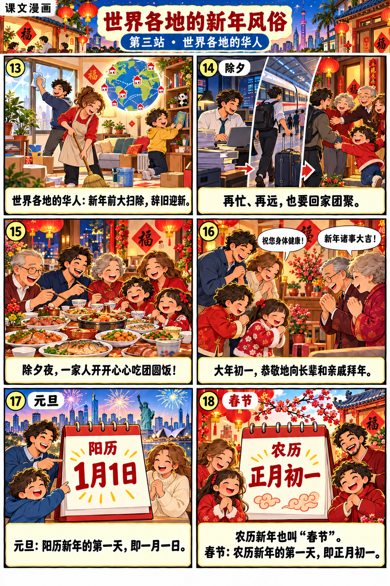

漫画回读
按课文顺序阅读。图画帮助理解，答案依据回到原文。
第一段 · 西班牙
当教堂的钟声在午夜12点响起时，大家都争着吃葡萄，如果能跟着钟声连续吃下12颗，就象征新的一年12个月都事事如意。
第二段 · 古巴
按照当地风俗，每人准备一碗清水，等午夜钟声敲响后，各自把水泼到窗外，以示辞旧迎新。
第三段 · 意大利
夜幕降临，人们在街头燃放烟火，翩翩起舞。到了午夜时分，家家户户把旧的瓶瓶罐罐扔出窗外，表示去除烦恼和厄运。
第四段 · 丹麦
新年前夕，人们把平时打碎的杯盘碗碟偷偷送到朋友家的门前。谁家堆放的碎片多，就说明谁家的朋友多，也预示着来年的好兆头。
第五段 · 世界各地的华人
农历新年来临前，华人会在家里大扫除，辞旧迎新。除夕夜，不管工作多忙碌，路途多遥远，大家都要回家团聚，开开心心地围坐在一起吃团圆饭。大年初一，人们恭敬地给长辈和亲戚拜年，互相祝福，希望在新的一年身体健康，诸事大吉。
课本小知识
元旦：阳历1月1日。春节：农历正月初一。农历新年也叫“春节”。


